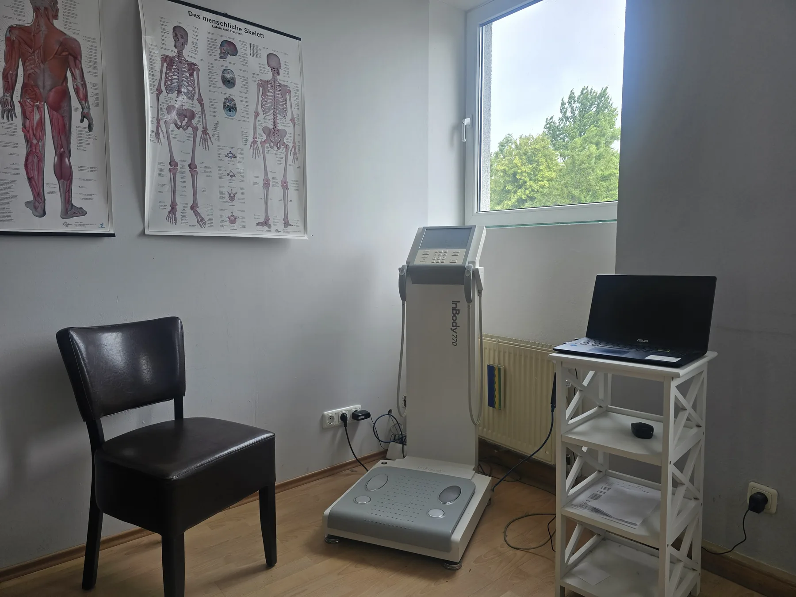

Fachlich einordnen
Gesundheitliche Voraussetzungen werden persönlich besprochen. Die Website ersetzt keine medizinische Beratung und verspricht keine Heilwirkung.
Gesundheitstraining in Kiel
Körperzusammensetzung verstehen, den Rücken trainieren und Bewegung auf deine Voraussetzungen abstimmen: Im KIELS am Grasweg 48 verbinden wir die Körperanalyse mit dem InBody 770, Sportdiagnostik und persönlicher Trainingsplanung.

Verstehen → Analysieren → Planen → Trainieren
Drei aufeinander abgestimmte Schritte schaffen eine klare Grundlage für deinen persönlichen Trainingsweg.
Wir betrachten deine Körperzusammensetzung und schaffen eine fundierte Grundlage für dein Training.
Gemeinsam erfassen wir deine Ausgangssituation, deine Ziele und wichtige individuelle Voraussetzungen.
Auf dieser Grundlage entwickeln wir einen passenden Trainingsweg und passen ihn bei Bedarf an.
Körperanalyse mit InBody 770
Messwerte werden gemeinsam eingeordnet – nicht isoliert betrachtet.

Die InBody-770-Analyse liefert differenzierte Informationen über deine Körperzusammensetzung. Gemeinsam ordnen wir die Ergebnisse ein und nutzen sie als Grundlage für eine individuell abgestimmte Trainingsplanung.
Persönliche Betreuung und Trainingsplanung
Deine Ziele, deine Ausgangssituation und deine gesundheitlichen Voraussetzungen bilden die Grundlage für dein Training. Gemeinsam entwickeln wir einen passenden Einstieg und passen deinen Trainingsplan bei Bedarf an.
Zum Mitgliederangebot gehört einmal pro Woche eine Arztsprechstunde mit Dr. Hosch, Facharzt für Orthopädie und Sportmedizin. Termine erhältst du am Empfang. Die im Haus ansässige Physiotherapiepraxis ist ein ergänzendes, eigenständiges Angebot; aktuelle Verfügbarkeit und Termine erfragst du bitte direkt beim Team.
Gesundheitsberatung anfragen ↗Gesundheitliche Voraussetzungen werden persönlich besprochen. Die Website ersetzt keine medizinische Beratung und verspricht keine Heilwirkung.
Gesundheitsorientierte Trainingsangebote
Rückenfitness und postnatale Rückbildung verfolgen unterschiedliche Trainingsziele.
Gezielte Übungen kräftigen Rücken und Rumpf. Der Kurs unterstützt Stabilität, Beweglichkeit und eine belastbare Haltung im Alltag.
Rückenfitness im Kursangebot ↗Für Frauen nach Schwangerschaft oder Entbindung: kontrollierte Übungen unterstützen die postnatale Rückbildung und den Wiedereinstieg in Bewegung.
Aufbau Rückbildung kennenlernen ↗Dein nächster Schritt
Du möchtest gezielt trainieren und wissen, welches Angebot zu dir passt? Unser Team unterstützt dich beim Einstieg.
Beratung anfragen ↗